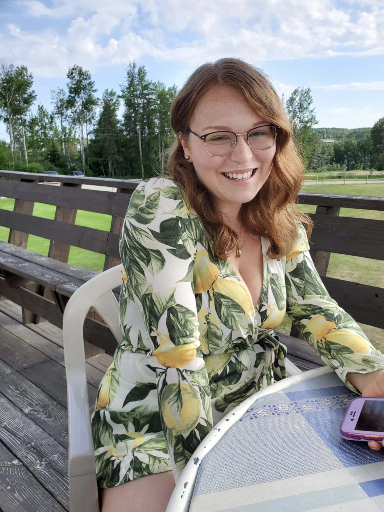
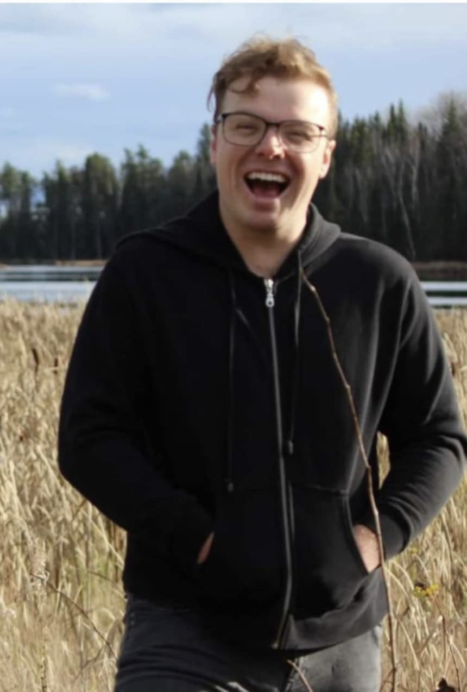
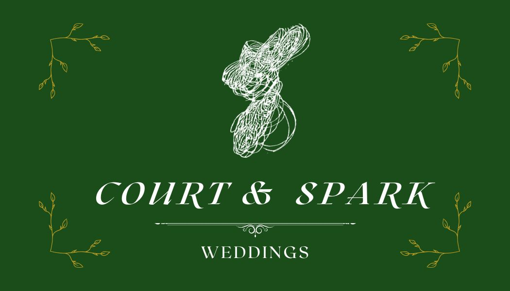

About Me Courtney Doyle-Evans.
Courtney Doyle-Evans is your Baker and Photographer. Having successfully run two companies in her hometown of Chapleau, ON, the owner of Cakes by Courtney & Captured by Courtney, has been providing her keen eye and crafty spirit to happy couples in the North for more than 6 years. Courtney excels in everything she does; whether it is catching the beauty of the first moment your see your true love at the end of the aisle, the detail and care of your favourite flavours coming to life, or the comfort of organizing your loved ones and swiftly capturing moments that will last a lifetime in your home, she is hard to beat.
When Courtney isn’t creating life-long memories, she can be found at her other role as a financial service representative. Her approachable and professional demeanour install both trust and optimism in her clients, and she is rapidly making a name for herself as a stand out in her field. The trust of dealing with people’s most precious resources on a daily basis make Courtney acutely qualified in handling your biggest day!
When she finds a brief moment for herself, she loves collecting rocks and shells, watching One Tree Hill, and playing with her dog Taz, and her new niece, Cleo! She cannot wait to meet you and make your wedding dreams come true!

About Me Matthew Fearnley-Brown
Matthew Fearnley-Brown is your Live Entertainment, D.J, and Master of Ceremonies. You may know him as Matthew James, a rising local musician. If you have not heard of him, you definitely have HEARD him around town! Whether it is playing 4-5 times a week at local restaurants and bars, singing the National Anthems at Greyhounds games, or dancing the night away to his music and DJ sets at your friend’s wedding. Playing over 150 shows a year, Matthew has cultivated a very strong and dedicated following in the Sault area.
Those who hear Matthew want to hear more! This is why Matthew is proud to have been voted the Sault’s Best Artist by KISS FM 2024, and Best Local Band, Entertainer, Live Entertainment, and...BEST WEDDING ENTERTAINMENT by Sault Ste Marie CommunityVotes 2024. Whether it is a new spin on and old classic, a faithful cover of your favourite song as you walk down the aisle, or an electric DJ set during your reception, Matthew has your entertainment covered! Conga line or not, His boundless energy and showmanship bring the “party” to your “Wedding party”.
When he is not entertaining the North, he is teaching the next generation of students as a vocal coach! He loves his Toronto Maple Leafs (because crying is fun), he also loves playing with his dog and golfing with anyone who’s free! He is stoked to meet you on the dance floor!


- Carly & Dave
“Matthew James was easily the highlight of our wedding! He personalized the songs for my father-daughter dance and my husband’s mother-son dance, and his voice literally moved me to tears! He mixed in new and old classics that everyone could vibe to! Our friends and family have not stopped talking about how amazing he was!He was also so accommodating and made everything super easy! He showed up early, stayed late, and was super flexible with everything. If you’re looking for someone who’ll make your wedding (or any event) truly unforgettable, Matt is your guy! We’re so grateful to have had him as part of our day, we honestly we couldn’t have asked for anything better! Thanks so much Matt!”
- David & Hannah
“I speak on behalf of both Hannah and I, Matthew was absolutely amazing, and we are so happy that he was able to be a part of our day with such a key role in particular. It was all perfect, the day and the evening. It really set the tone with the entry music and ceremony. Also, my GOODNESS, the cake was unbelievable, so delicious that it is dangerous. Thank you Courtney for putting strong effort into that as not only did it taste good, it looked good! We appreciate what Matthew and Courtney have done for us, and the work you put in.”
- Brandon & Cassandra
"We had the pleasure of having Matthew James provide live music and entertainment for our wedding reception at Northern Superior Brewery, and he was absolutely amazing! He was easy to work with, accommodated all of our wedding song requests perfectly, and kept everyone entertained, singing, and dancing all night long. Our guests couldn’t stop raving about him and were even asking us for his contact information. Matthew’s talent, combined with his friendly and personable nature, made him a highlight of our day. If you’re considering live music for your event, I highly recommend booking him ASAP!”
- Amanda S.
“We had heard Matthew play at several venues in Sault Ste. Marie and when we got engaged we reached out to him immediately to see if he could be part of our special day. He became one of the reasons it was a truly magical day and entertained us all evening. He is extremely kind, very easy to work with, and incredibly talented."